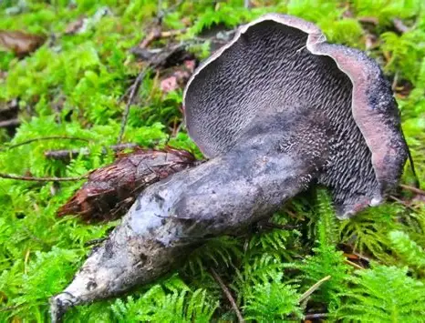
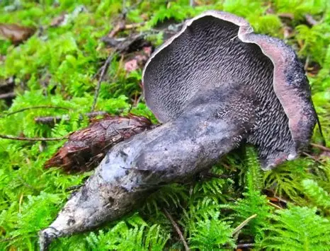

"Hydnellum fuscoindicum, commonly known as the violet hedgehog,[3] is a species of tooth fungus in the genus Hydnellum." (source: wikipedia)
"It produces fruit bodies with a violet-black cap, violet flesh, and violet spines on the cap underside. The odor and taste are very farinaceous.[6] It is not recommended for consumption due to producing a burning sensation.[3] It is found in the Pacific Northwest in moss around western hemlocks.[6]" (source: wikipedia)
 
